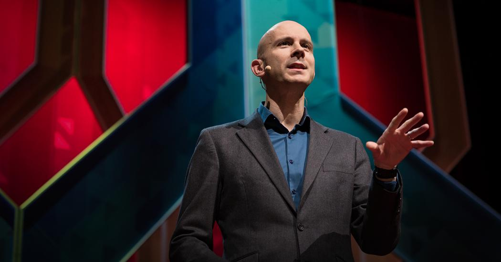
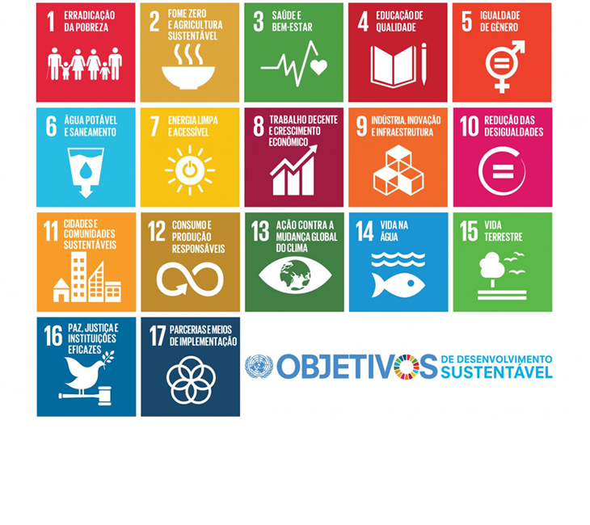

Paralelo à isso, sempre fui uma pessoa inquieta. Quando começo um projeto, estou com um "gás" enorme, exalando energia e vontade de criar. Porém, passa algum tempo, e acabo cansando daquele assunto, daquela mesma tarefa, e acabo por me interessar em fazer algo diferente.
Pra ser sincero, esse tem sido um ponto que tem me perturbado bastante nos últimos meses. Sou formado Técnico em Informática, e desde muito pequeno sou apaixonado pela área da tecnologia. Porém, depois de quase dois anos trabalhando com a criação de aplicativo e websites, simplesmente falei para mim mesmo: chega. E troquei para outra área que sempre gostei muito: o design!
Uma das coisas que mais gosto no design é a pluralidade de opções com o que posso trabalhar. Design de superfícies; Design Editorial; Design de Interfaces; Design UX; Design de estamparia; Design de jogos... É uma lista que não acaba mais, e que se subdivide em muitas outras áreas.
Quando decidi mudar o rumo da minha carreira, me peguei pensando - lá no fundo - se não acabaria por me enjoar do Design em algum momento. Porém, essa gama de oportunidades diferentes foi o que me incentivou. Afinal de contas, se em algum momento eu me cansasse do que estava fazendo, poderia pular para a área ao lado e me redescobrir mais uma vez.
Quando a gente empaca

Como afirma Tim Harford em seu TED, quando estamos fazendo palavras-cruzadas, não é incomum que acabemos estagnando em alguma charada específica. Na nossa mente, só nos vêm uma resposta errada, que não cabe na quantidade de quadradinhos proposta pelo jogo. E quando tentamos pensar em algo diferente, aquela palavra errada insiste em reaparecer na nossa mente.
Para solucionar este problema, o jornalista propõe então que deixemos as palavras-cruzadas de lado e foquemos em outra coisa completamente diferente. Algo que não nos lembre do tema nem do jogo. Assim, nossa mente esquecerá aquela resposta incorreta e, quando voltarmos para resolver a questão, a resposta correta virá com muito mais facilidade.
E é com base nisso que se baseia a ideia da "Multitarefa em câmera lenta".
Slow-motion multitasking
O termo consiste na ideia de que possuímos inteligências múltiplas. Não nascemos só para fazer uma função específica. Nossa vida não se resume à isso. O mais provável é que cada ser humano possua diferentes paixões, diferentes assuntos que gostaria de se aprofundar e descobrir mais.Segundo o economista, nosso poder de criatividade é potencializado quando não focamos toda a nossa energia em uma única tarefa. Se pudermos alternar entre diferentes projetos, conseguiremos potencializar muito mais a nossa capacidade de criação.
Ouvindo o TED de Harford, senti como se uma enorme ficha finalmente caísse.
Não preciso me preocupar em cansar de fazer algo. Não preciso me preocupar se quero aprender algo diferente, ou fazer muitas coisas em paralelo. Se eu quiser aprender Design, Tarot, Animação e Programação ao mesmo tempo, não tem problema algum - e, ainda por cima, pode ser muito benéfico.
O importante é que saibamos separar cada coisa, escolher qual a melhor hora para parar de focar em algo e mudar nossa atenção para outra área.

Os 17 objetivos

Em 2015, a ONU lançou os 17 Objetivos de Desenvolvimento Sustentável - ou, para os íntimos, ODS -.
Estes objetivos visam melhorar uma série de questões ambientais até 2030, mas sem jogar a responsabilidade em algum órgão específico.
Este plano explicita a necessidade de cada pessoa agir em sua individualidade; cada organização; cada empresa; cada órgão e entidade devem estar comprometidos com estes objetivos, afim de que possamos viver em um futuro melhor.